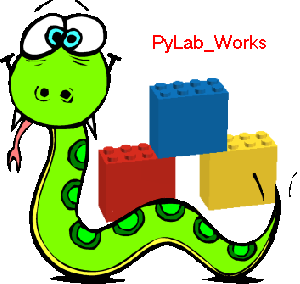

ToDo  ( March 2009 )
( March 2009 )
Application Designer / Domain Expert / Control Designer / Core Developer
- Null can't be stored in inifile. This is simple to solve for the single value Null, but difficult for nested values. Probably both pickling and configobj have problems with this. So for we've some workarounds: writing CS_gen, Null is translated into None.
